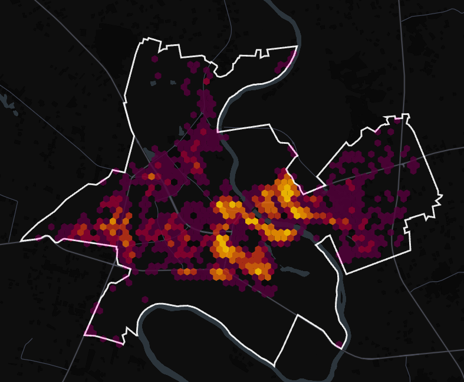
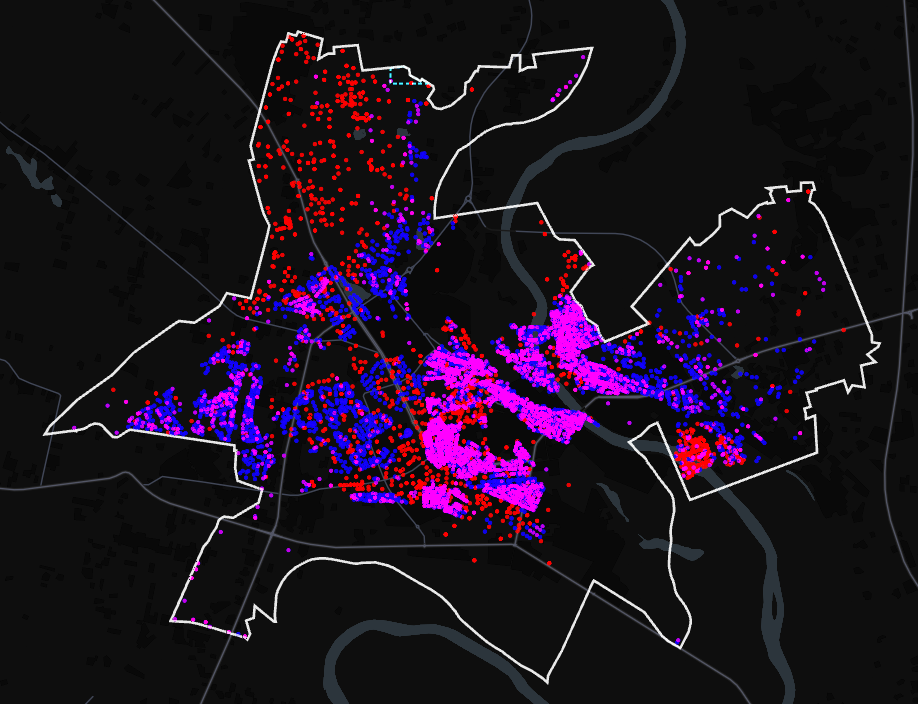
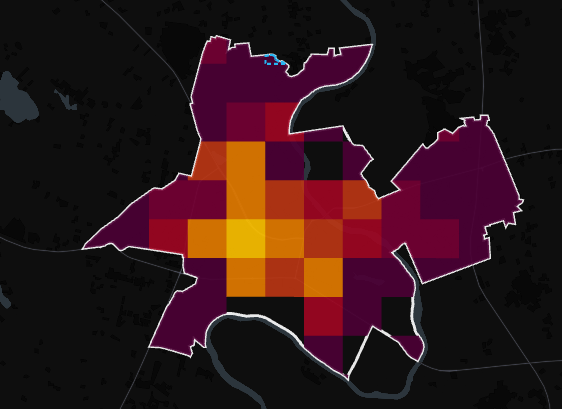
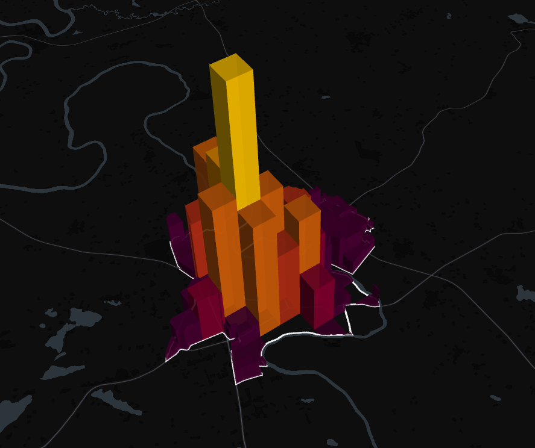

Interaktyvūs Alytaus miesto GIS žemėlapiai
Šioje svetainėje pateikiami praktinių užduočių metu sukurti interaktyvūs žemėlapiai, skirti Alytaus miesto teritorijos, infrastruktūros ir geografinių duomenų analizei.
Portale integruoti kepler.gl, Geoportal ir ArcGIS Online pagrindu sukurti žemėlapiai, leidžiantys analizuoti miesto duomenis bei vykdyti objektų peržiūrą.
Gyvenamųjų pastatų žemėlapis
Kepler.gl aplinkoje parengtas Alytaus miesto gyvenamųjų pastatų analizės žemėlapis.
Atidaryti žemėlapį →
Papildomas analitinis žemėlapis
Papildomas kepler.gl aplinkoje sukurtas Alytaus miesto erdvinių duomenų analizės žemėlapis.
Atidaryti žemėlapį →
Teminis žemėlapis
Geoportal ir QGIS duomenų pagrindu parengtas teminis Alytaus miesto žemėlapis.
Atidaryti žemėlapį →
Pranešimų peržiūra
ArcGIS Online pagrindu sukurtas žemėlapis, skirtas registruotų pranešimų ir objektų peržiūrai.
Atidaryti žemėlapį →
Pranešimų registravimas
ArcGIS Online aplinkoje parengtas žemėlapis, skirtas naujų objektų arba pranešimų registravimui.
Atidaryti žemėlapį →